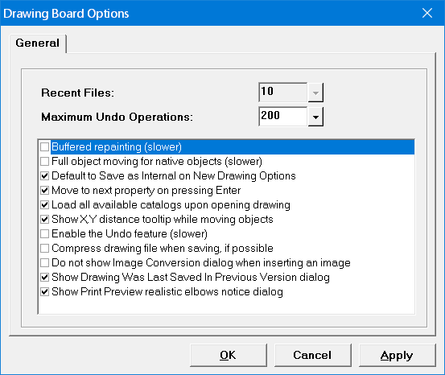

Drawing Board Options (Drawing Board Tools Menu) |
  
|
Drawing Board Options (Drawing Board Tools Menu) |
|
Icon:  . Keyboard Shortcut: ALT, T, O
. Keyboard Shortcut: ALT, T, O
Opens the Drawing Board Options dialog, where you can set custom preferences for Drawing Board.

Recent files: Sets the number of recently opened files displayed at the bottom of the File menu. This option is only enabled when running the Stand Alone Drawing Board program.
Maximum Undo Operations: Determines the maximum number of incremental changes to the drawing that can be undone with the Undo feature, which requires a certain amount of temporary hard disk space for each change you make to the drawing. All of this space is recovered as soon as you close the drawing window, but if your hard disk space available is relatively small you may want to limit the maximum number of Undo operations to a small number.
For example, a relatively small drawing may require around 300kB of hard disk space for each potential undo operation. If you were to work in that drawing long enough to make 100 incremental changes to the drawing, the amount of temporary hard disk space required to undo all of your changes would be around 30MB.
Buffered repainting: Stores an off screen bitmap image of the drawing in memory for a faster looking repaint. The performance of the drawing is slower with this option checked.
Full object moving for native objects: When checked, native objects are redrawn fully while being moved. When unchecked, only the outline of the object is drawn.
Default to Save as Internal on New Drawing Options: When checked, makes it so when you start a new drawing in a project the New Drawing Options dialog defaults to the first option, which is to save the drawing data within the current Rhvac project file.
Move to next property on pressing Enter: Makes it so the Object Properties window highlights the next property in the list after you change a property value and press Enter.
Load all available catalogs upon opening drawing: When checked, all catalogs (dbc files) in the Catalogs folder will be loaded into the Catalog Browser. When unchecked and you open an existing drawing or template, only those catalogs that were last included with that drawing or template will be loaded.
Show X, Y distance tooltip while moving objects: Makes it so a tooltip showing the distance the object is being moved from its original position is displayed whenever you move an object on the drawing.
Enable the Undo feature (slower): Enables the Undo item under the Edit menu, which lets you undo changes you make to the drawing. If this box was unchecked and you check it, the Undo history begins at the drawing's current state. Note: Enabling the Undo feature can significantly decrease the drawing performance, especially on drawings with a lot of data.
Compress drawing file when saving, if possible: Makes it so the drawing file (dbp file) is compressed whenever you save the project, if possible.
Dont show warning when inserting an image: When checked, turns off the popup warning that appears when you try to import or paste an image into the drawing. When unchecked, the dialog is displayed when you import or paste an image. The steps to properly insert an image into a drawing are given in the Importing a Floor Plan PDF Image topic.
Do not show Image Conversion dialog when inserting an image: When checked, prevents the Image Conversion dialog from showing whenever you add an image to the drawing, and adds the image without any conversion to monochrome.
Show Drawing Was Last Saved In Previous Version dialog: When checked, shows the Drawing Was Last Saved in Previous Version dialog upon opening a drawing that was last saved in Drawing Board for Rhvac Version 1 (the current version is 2).
Show Print Preview realistic elbows notice dialog: When checked, shows the Realistic Elbows Notice dialog when you print preview a drawing that has ducts, if you do not yet have a license for Rhvac for Drawing Board version 2.
OK button: Applies any changes you have made and closes this dialog.
Cancel button: Closes this dialog without making any changes.
Apply button: Applies any changes you have made to this dialog and leaves the dialog open.